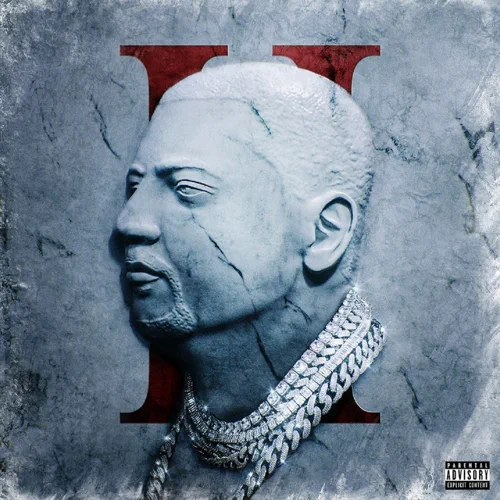
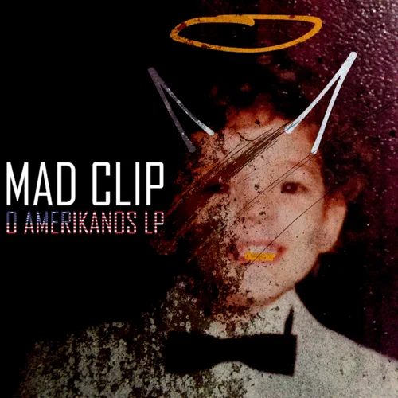

Still Active |
|
Κυκλοφόρησε 26 Μαρτίου του 2021,
περιέχει 7 κομμάτια που έχουν συνολική διάρκεια 26 λεπτά. |
Super Trapper 2 |
|  |
|
Κυκλοφόρησε 4 Δεκεμβρίου του 2020,
περιέχει 12 κομμάτια που έχουν συνολική διάρκεια 45 λεπτά. |
Super Trapper |
|
Κυκλοφόρησε 28 Μαΐου του 2019, περιέχει 9 κομμάτια που έχουν συνολική διάρκεια 35 λεπτά. |
O Amerikanos |
|  |
|
Κυκλοφόρησε 26 Σεπτεμβρίου του 2017, περιέχει 12 κομμάτια που έχουν συνολική διάρκεια 46 λεπτά. |